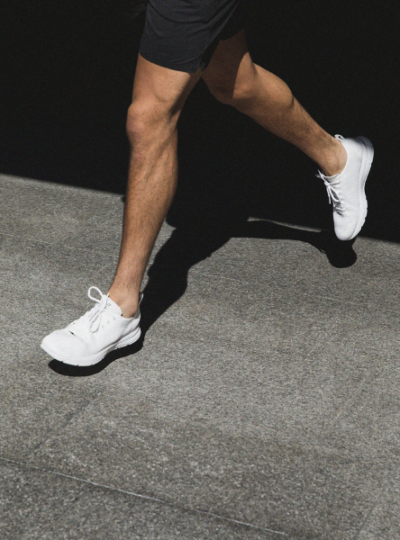
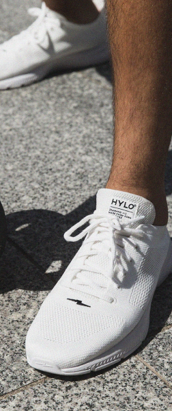
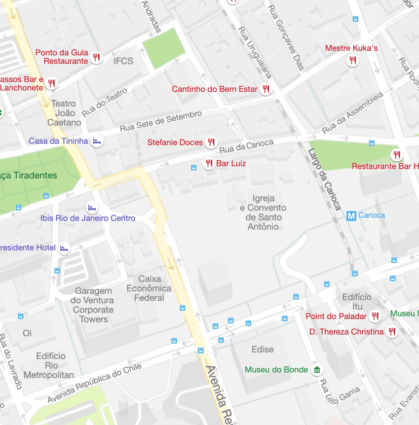

SNEAK.
Ultra Light
Os tênis SNEAK foram criados especificamente para treinos de circuito, seja para aulas fitness em casa ou para sua própria rotina de treinos.

Leveza e agilidade
A construção ligeira de espuma e malha do SNEAK proporcionam conforto e agilidade durante o exercício. Um “burpee break” na parte frontal do pé torna-o extremamente flexível para fazer prancha ou Mountain Climber.

Amortecimento imediato
A espuma grossa sob o pé absorve o impacto e retorna a energia ao correr com os joelhos altos e ao saltar. O suporte de arco da parte média do pé garante conforto durante todo o treino.


Sensação de estabilização
O outrigger - a proteção lateral - dá estabilidade ao pé ao fazer movimentos laterais, como por exemplo, o Skater Squat.

